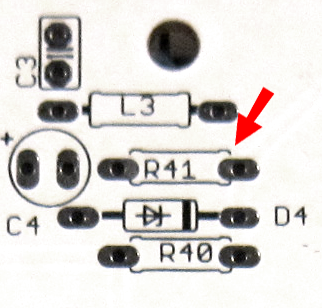

I went with the aluminium dibond. The surface is really nice (apart from the hair). It reminds me a lot of matte textured acrylic, but hopefully will be harder-wearing.
a|x

I went with the aluminium dibond. The surface is really nice (apart from the hair). It reminds me a lot of matte textured acrylic, but hopefully will be harder-wearing.
a|x
I tried the 1V/Oct pitch scaling and it works.
Patch setup:
Ableton sends MIDI note value to CVpal (MIDI to CV converter). Its CV out is connected to Euxoloti CV 1(0-5V) which controls the pitch of the OSC.
The right value of the ADC was token before. A calibration routine (write/read from SD card) is still missing.
script2 object:
`uint8_t step = 0;
int last_in = 0, diff = 0;
int oct;
uint32_t note;
uint32_t stepSize;
uint32_t rootNote;
void setup(void){
stepSize = 0x00200000;
rootNote = 0xFFB00000;
out2 = 0xFFB00000;
}
void loop(void){
// diff = in1 > last_in ? in1 - last_in : last_in - in1;
// if (diff > 200) {
if (in1 <= 26869759) {
step = in1/2239146;
oct = 0;
}
else if (in1 > 26869759 && in1 < 53739519) {
step = (in1-26869759)/2239147;
oct = 1;
}
else if (in1 > 53739519 && in1 < 80543743) {
step = (in1-53739519)/2233685;
oct = 2;
}
else if (in1 > 80543743 && in1 < 107413503) {
step = (in1-80543743)/2233685;
oct = 3;
}
last_in = in1;
out1 = rootNote + ((stepSize * step) + (oct * 0x1800000));
out2 = rootNote + (stepSize * step) + (oct * 0x1800000);
// }
// chThdSleepMilliseconds(1);}`
Got my pots and headers, now. Will start soldering this evening.
Any tips on breaking off the Axolotl power and MIDI section? Does it have to be scored with a craft knife or scalpel beforehand, or is it possible just to break it without scoring?
a|x
I used a dremel with a cutting disc. But you can also cut slots/scores with a sharp knife on both sides and break it away.
if you have any problems at assembling, send a email for quick response.
and no, I haven't tried cv out.
good luck.
To break away the power/MIDI section: certainly score with a sharp knife (I'd suggest a snap blade knife - the knife will blunt quickly on pcb) before breaking.
Go multiple (many) times over the same line to make a deep score on the backside. Deviate a bit from perpendicular cutting after the first score to make a v-shaped score. Perhaps mask off the backside with tape to prevent accidental damage to the circuit board. After a deep score is made, you can bend it to break.
I cut the board with a Dremel, as paul suggested. Worked well.
Haven't started on soldering the Euxoloti, because got sidetracked by fucked up laptop, amongst other things.
a|x
Paul, I got my mouser box today and was going to start building tomorrow night. Do you have a build guide yet or should I just try start one up based on the schematic?
I started a build guide last night. Mostly for me to double and triple check stuff before doing it. Its not very far along (only spent a bit of time on it last night) but i should be able to finish it this evening. This is very much version .0001
So far I have only had one bump! I am having a hard time tracking down the value for R41 though. On the panel its is here:

Which I think equates to around here in the schematic:
I will readily admit I may be missing something obvious! But thats the fun of building the document as I go!
Also @paul , I am not sure if this is the right place for this discussion or if you wanted to break it off to somewhere else. Let me know.
wow cool and big thank you @fma for your guide.
Last night i had a conversation with toneburst about his euxoloti build. I was actually working on a new mod and build instructions. Here is a state of the actual work:
BUILD & MODs WIKI
Thanks @paul. Its mostly for me to make sure I am covering all the bases. A link to the Build & Mod Wiki is going to go right at the top. I will be adding a bunch of the wiki data into the document! I may need some clarification on the Audio mod, but ill wait until everything is in front of me to ping you.
@fma
I have written the instructions very fast, so they're maybe some errors. I can send you all my original graphic file to add them in you guide.
write a mail to the euxoloti mail address if you need any help. It's the easiest and fastest way.
By the way, here is my concept ideas for some expander. @toneburst recommended to name them euxpander  .
.
Schematic, eagle files etc. @Github
I didn't find a good solution for the SD Card. What do you think about the concept?
This looks great, paul!
I still think combining the two into a single 'Euxpander' would be better, though. If you won't go that route, then I'm sure the USB2DAC panel could be made at least 1HP narrower.
a|x
I guess the GAT8 outputs could be used with PWM, too (albeit with no filtering, so it would be pretty lo-fi).
a|x
What we really need for the SD card is an SD card extender cable, but one with a ribbon cable that ends in bare wires, or some kind of socket/plug. I wonder if such a thing exists..
Alternatively, something like this could probably be super-glued to the PCB. Maybe you could put holes either side of it, so it could also be held down to the board with a small cable-tie.
a|x
@paul I would love the files. My day job requires both photoshop and illustrator so I should be able to consume whatever format you have.
What is the mailing list address? I may have missed it, and there were a couple of times in the last few nights that I wanted to drop a couple of questions to you guys but didn't want to clog up this board. 
The expanders are dope. I like not combining them, even more so if you are feeling you could chain them. When do you start running out of Axoloti channels? I threw an 11300 into my last mouser order so I was going to start messing with that as the ADC/DAC in conjunction with the Euxoloti core, However mouser decided to only send 1/2 of my trim pots (im missing the 5k ones) so its not going to be until next weekend until I can put it together.
Micro SD cables should be pretty easy to hack/make, but this would only be a solution for DIY folks, not something commercial.
I take that back. Apparently Mouser doesnt stock this guy and its on backorder, They have an estimated delivery date of end of March! I am going to see if I can source these guys elsewhere, because it would SUCK not to actually work on this project until then. There is only so much documentation one can handle without actually doing the stuff!
@fma you're right about chaining being the best reason to not combine the two boards.
Having said that, there could still be a combined board, with the possibility of adding more GAT8s.
a|x
It's not a mailing list, it's my euxoloti address. Check your mails, I send you some files. But we should start mailing list for detailed feedback from each other. My MAX11300 will be arrived in maybe 4 weeks, I have to wait for restock. Do you order a raw 11300 or the dev kit?
I want to use the 11300 for a universal extension board for axoloti & euxoloti. Maybe the same concept as the core+control pcbs. So user can pick parts like their individual recommendations needs to.
the variable 5k resistor is a standard part, you can take any manufacturer but the legs must be orientated as a triangle and it must be in a horizontal package.
For SD card thing. It will be possible to glue a sd card adapter under the USB-B jack. The USB-B jack only has to be a SMD device and the cutoffs for the USB socket has to be enlarged with a rasp. For real DIY addicted .
I think, I will go the single module way, so everyone can pick as much as he/she needs. If the white wall panel solution is ok for you, you can easily combine each panel file to one and order it as a single piece.
and I think there are 3-4 unused axoloti pins (incl. GAT8++ & USB2DACs). If you don't install the buttons + leds, you have 8 more Axoloti I/Os…
One observation I would make about the trimmers, paul:
They're a bit close together. And the left one of the trimmers at the top of the board is too close to a ceramic cap. It would be worth making a little space around them, on the next Core board revision.
a|x
{kind=link}
{kind=link}
{kind=link}
{kind=link}
{kind=link}